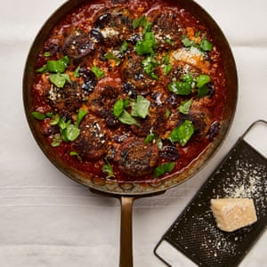

Aubergine and ricotta dumplings in tomato sauce

Heat the oven to 180C (160C fan)/390F/gas 4. Spread out the breadcrumbs on an oven tray and bake for 12 minutes, until lightly browned and dried out. Remove, leave to cool and turn up the oven to 240C (220C)/465F/gas 9.
On a large oven tray lined with baking paper, toss the aubergines in 75ml oil, half a teaspoon of salt and a good grind of pepper. Spread out on the tray, bake for 30 minutes, tossing once halfway, until golden brown, then chop into a chunky mash and put in a large bowl. Mix in the ricotta, parmesan, parsley, egg, extra yolk, flour, breadcrumbs, a third of the garlic, two and a half tablespoons of basil, a quarter-teaspoon of salt and a good grind of pepper. With lightly oiled hands, shape the mix into 16 golf-ball-sized dumplings, each weighing about 55g, and compress so they hold together.
Heat two tablespoons of oil in a large, nonstick frying pan on a medium-high flame, and fry half the dumplings for three to four minutes, turning them until golden brown all over (adjust the heat if they’re browning too much), then transfer to a plate and repeat with the rest of the dumplings.
Heat the remaining two tablespoons of oil in the same pan, fry the remaining garlic for a minute, until fragrant, then stir in the tomatoes, tomato paste, sugar, chilli, paprika, oregano, a teaspoon of salt and a good grind of pepper, and cook, stirring occasionally, for eight minutes, or until thickened slightly. Pour in 400ml water, bring to a simmer, then lower the heat to medium and simmer for 10 minutes. Add the dumplings and cook for 15 minutes, or until cooked through.
Remove from the heat, scatter over the olives, the last of the basil and a grating of parmesan, and serve straight from the pan.